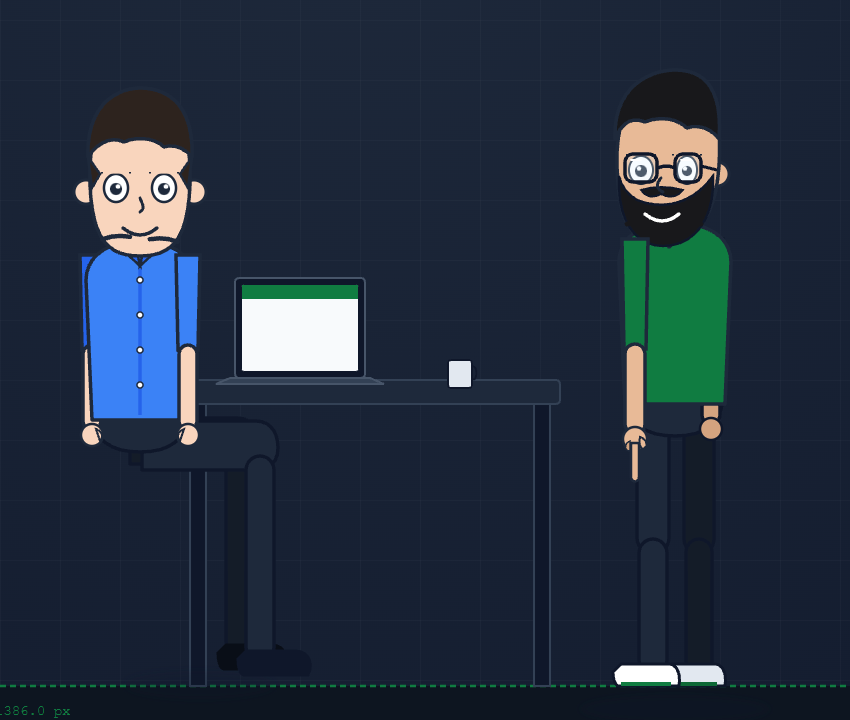
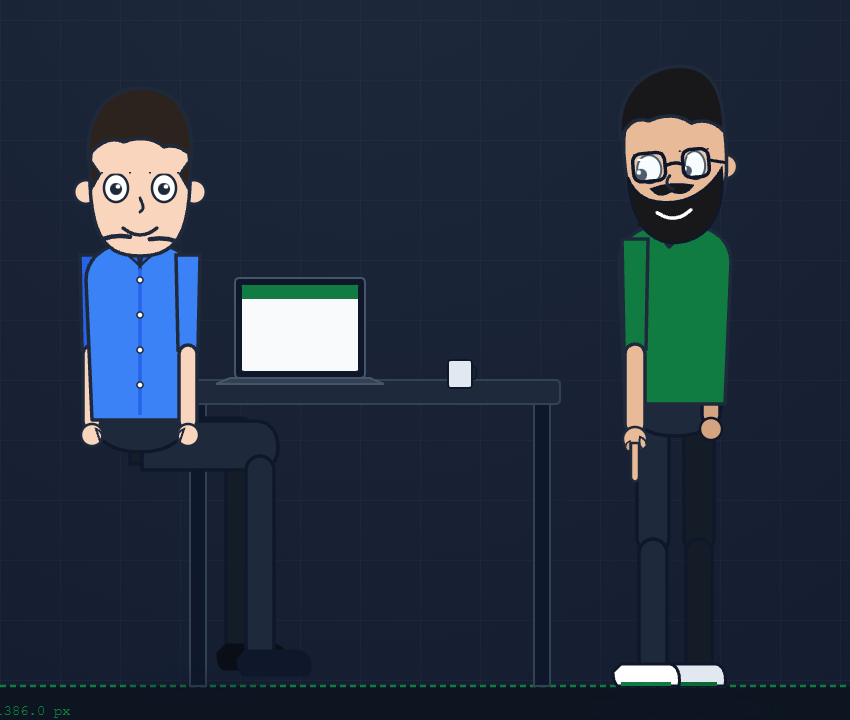
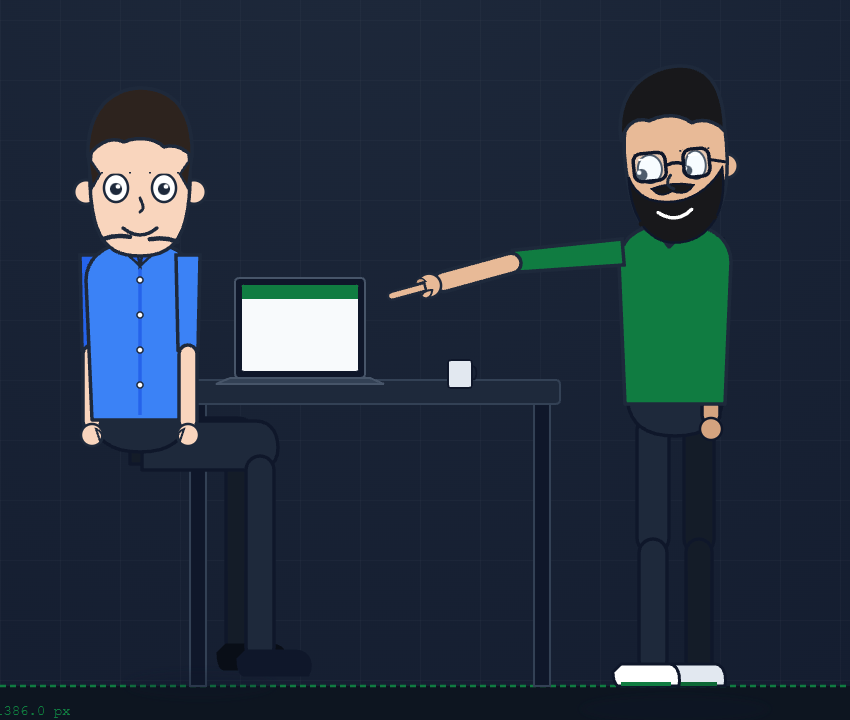
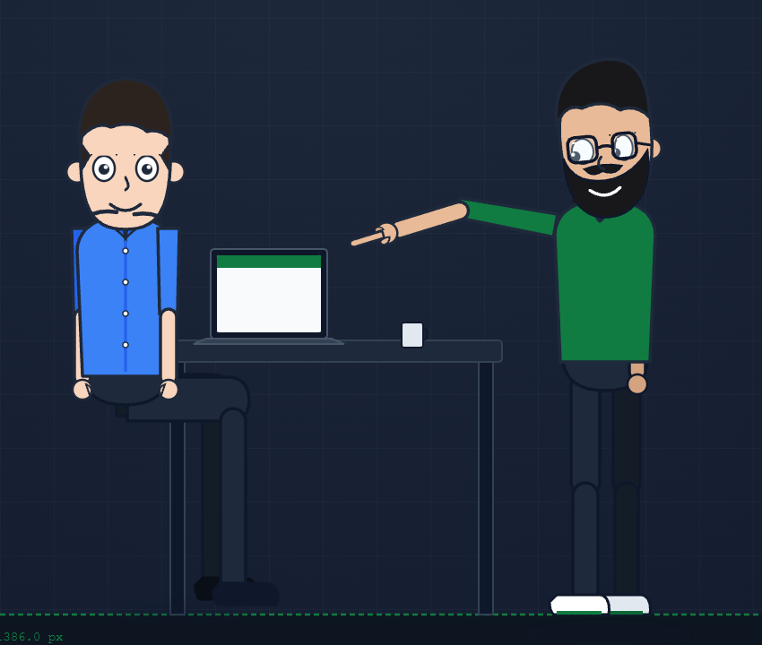
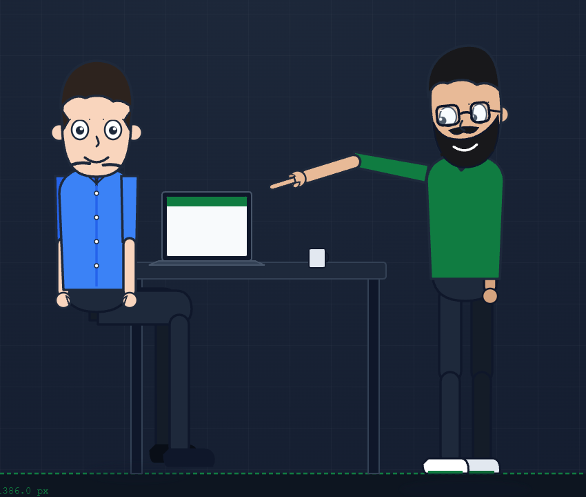

1. t = 12.0s: Rest Pose (Arm idle at side)

2. t = 12.2s: IK Initiation (Shoulder lifts, elbow flexes)

3. t = 12.4s: Extension Phase (Forearm projects towards laptop)

4. t = 12.6s: Target Alignment (Hand & index orienting)
5. t = 12.8s: Target Locked (Error: 2.24°, Flexion: 32.8°)

6. t = 13.0s: Karim Attentive (Gaze converges on laptop screen)